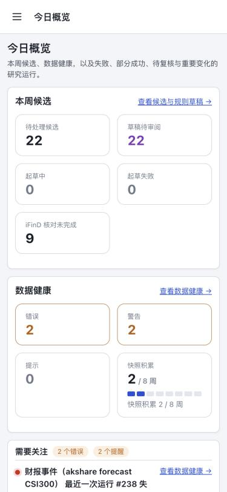
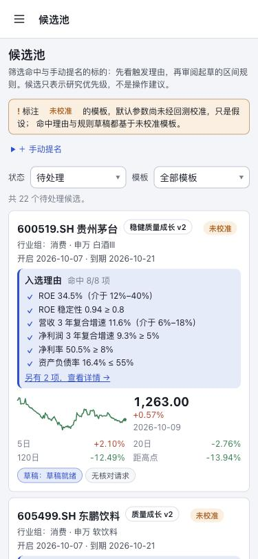
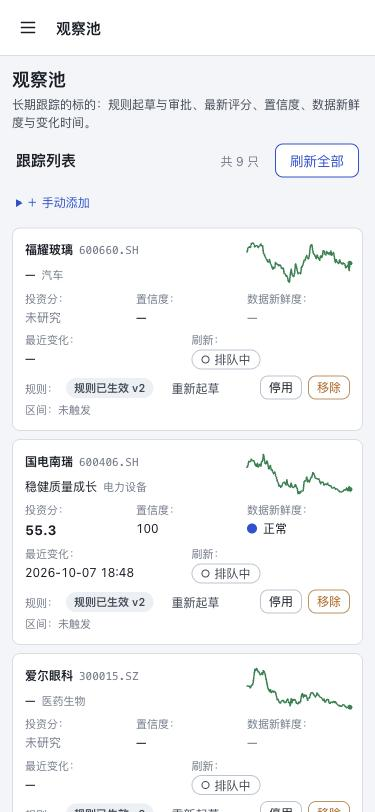
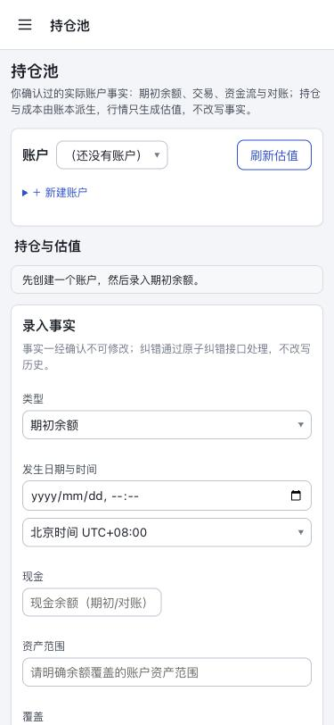
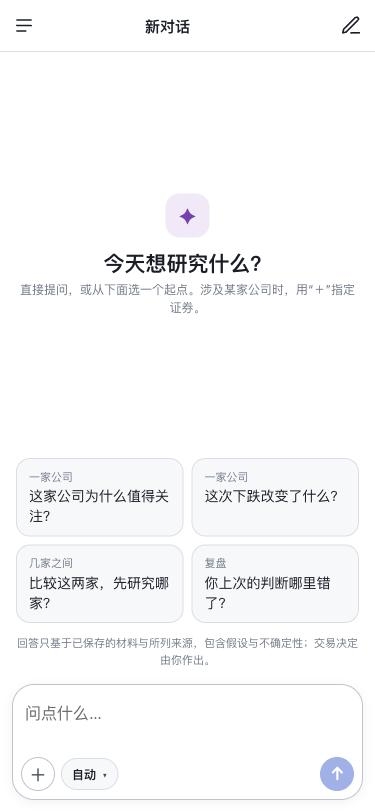
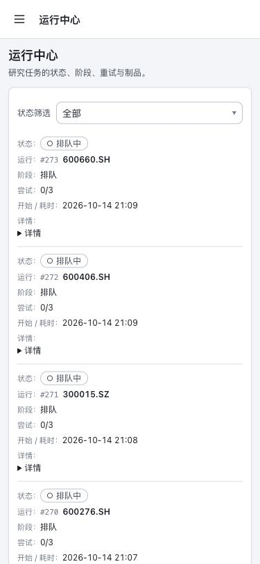
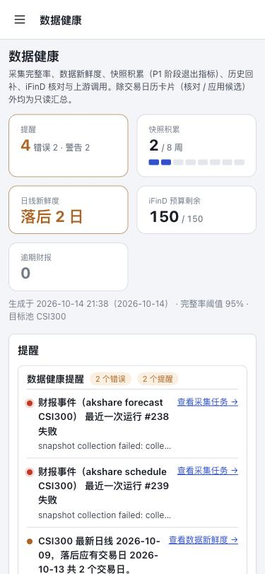
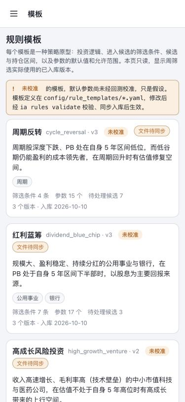
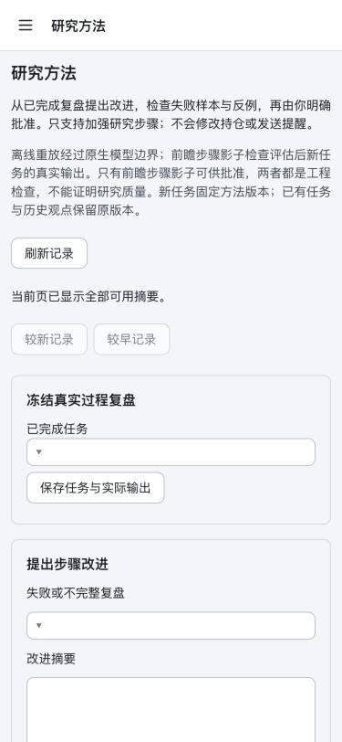
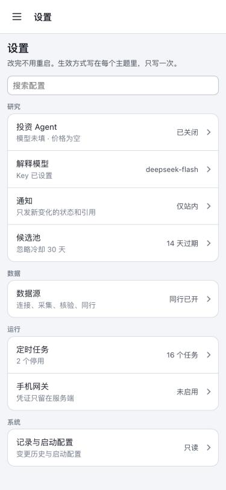

贵州茅台600519.SH
稳健质量成长草稿就绪
1,263.00+0.57%
8/8ROE 34.5% · 净利率 50.5% · 负债率 16.4%
到期 10-21 · 剩 7 天
2026-10-14 在 375×812 下走查现有 12 个页面 + 候选详情 + 导航，然后给出 v2 移动端设计。左侧灰框为现状截图，蓝标为 v2。
| 页面 | 页面长度 | <32px 触控 | 主要问题 |
|---|---|---|---|
| 导航 | — | — | 只有左上角 ☰ 抽屉，切换任何页面都要 2 次点击；没有全局搜索入口；顶栏标题和页面 H1 重复 |
| 今日概览 | 3.4 屏 | 20 / 43 | 5 个 KPI 大卡占满首屏，“需要关注”被挤到第 3 屏；链接都是 18px 高的下划线文字 |
| 候选池 | 11.1 屏 | 30 / 50 | 22 张卡每张约半屏；卡片上没有任何操作，必须进详情；页面说明 + 未校准提示占首屏 1/3 |
| 候选详情 | 10.7 屏 | — | 底部固定操作条是好模式，保留；7 个区间按钮把“7 日”折成两行；条件、参数、决策记录全部平铺 |
| 观察池 | 2.8 屏 | 37 / 58 | 表格降级成“投资分: / 置信度: / 刷新:”标签堆；停用、移除 24px 并排，容易误触；股票名可点区域只有 14px |
| 单股研究 | 9.7 屏 | 84 / 108 | 顶栏写“观察池”而不是股票名；“行业 + 运行研究”表单排在价格前；证据标签是 20px 高的按钮；9 个指标单列 |
| AI | 1 屏 | — | 10-13 已按移动稿改过，可用；但它有自己的一套顶栏，和其它页不统一 |
| 持仓池 | 3.1 屏 | — | 没有账户时，页面上仍铺着 32 个输入框；空状态只是一行灰字 |
| 运行中心 | 4.8 屏 | — | 每个任务 6 行“标签：值”，一屏只放得下 3.5 个；只显示代码不显示股票名；“▶ 详情”是原生三角 |
| 数据健康 | 9.2 屏 | — | 6 张表全部降级成标签堆（快照积累每周 6 行）；提醒和概览页重复；首屏 3 行说明 |
| 模板 / 方法 | 1.8 屏 | — | 模板徽章换行；研究方法是原生表单和空下拉框 |
| 设置 | 1.1 屏 | — | 分组列表 + 右侧值 + 箭头，体验最好，作为移动端列表的基准样式 |
所有页面都没有横向滚动。“<32px 触控”= 可点元素中高度小于 32px 的数量 / 可点元素总数。



共 9 只 · 规则全部已生效 v2 · 区间未触发

持仓只从你录入的账本事实派生；行情只用来估值，不会改写事实。

按最新研究（#220）：估值合理，PE 21.5 倍、PB 3.5 倍。与上次相比投资分 55.2 → 55.3，几乎不变；研究置信度从 92 升到 100。
日线已落后 2 日，我排队了一次刷新：


周期深度下跌、PB 处在自身 5 年区间低位，而低谷仍能盈利的成本领先者…
规模大、盈利稳定、持续分红的公用事业与银行，在 PB 处于自身 5 年区间下半部时…
收入高速增长、毛利率高的中小市值科技与医药公司，在估值不处于自身 5 年高位时…
高且稳定的 ROE 代表竞争优势，叠加持续的收入与利润增长，长期复利…
从已完成复盘提出改进，由你批准后生效。只加强研究步骤，不改持仓、不发提醒。
新任务使用当前方法版本；历史任务保留原版本。


